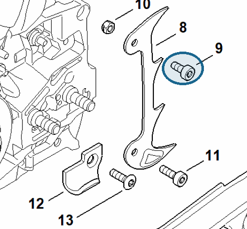
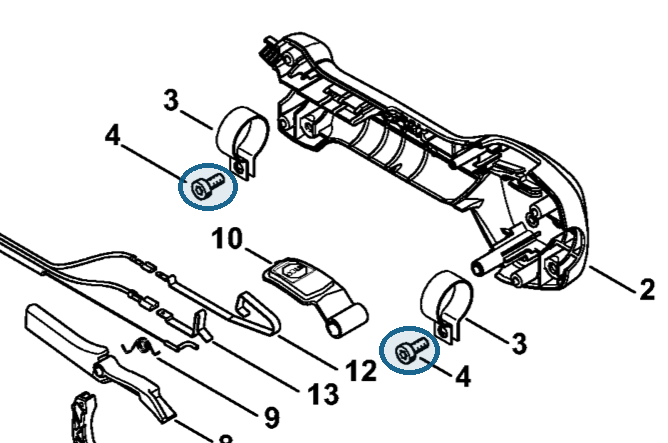

Spline screw M5x12
9022 341 0960
MS 462 — bumper spike
IS-M5×12. Screw at the upper hole of the inner bumper spike (item 8).
Item 9 Qty listed: 1

MS 462 C-M Z spare-parts list, 10/29/2024. Drawing p. 17; parts table p. 18.
HT 135 — handle clamps
IS-M5×12. Two screws secure the clamps (item 3) inside the control handle.
Item 4 Qty listed: 2

HT 135-Z spare-parts list, 10/28/2024. Drawing p. 15; parts table p. 16.